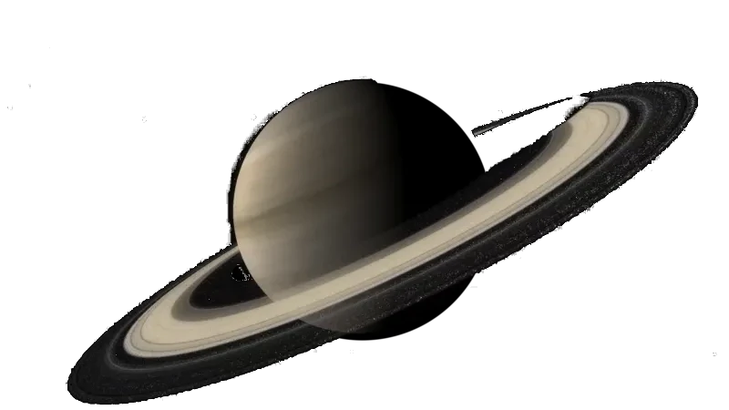

Saturn is the sixth planet from the Sun and is best known for its spectacular ring system. Like Jupiter, it is a gas giant made mostly of hydrogen and helium, and it is the second largest planet in the solar system.
Saturn has a diameter of about 116,460 kilometers, making it the second largest planet in the solar system. It orbits the Sun at an average distance of about 1.4 billion kilometers, taking about 29 Earth years to complete one orbit.
Saturn is composed primarily of hydrogen and helium, similar to Jupiter, with a possible small rocky core at its center. Saturn is the least dense planet in the solar system and would float in water if a large enough body existed.
Saturn's rings are made up of countless particles of ice and rock, ranging in size from tiny grains to large chunks several meters across. The rings extend up to 282,000 kilometers from the planet but are remarkably thin, often only about 10 meters thick.
Saturn has at least 146 known moons, the largest being Titan, which has a thick atmosphere and liquid methane lakes on its surface. Another moon, Enceladus, has geysers that erupt from a subsurface ocean, making it a target for the search for life.
Saturn's atmosphere features strong winds and storms, including a unique hexagonal-shaped jet stream at its north pole. Its pale golden color comes from ammonia crystals in its upper atmosphere.
Saturn has been visited by several spacecraft, including Pioneer 11, Voyager 1 and 2, and the Cassini-Huygens mission, which spent 13 years studying the planet, its rings, and its moons before deliberately plunging into Saturn's atmosphere in 2017.